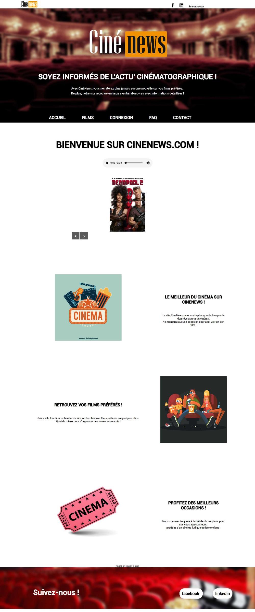
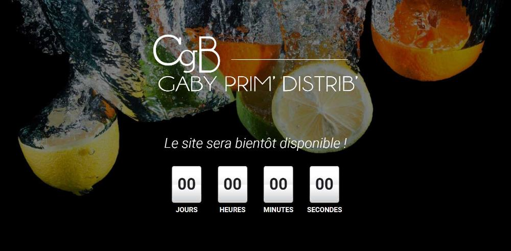
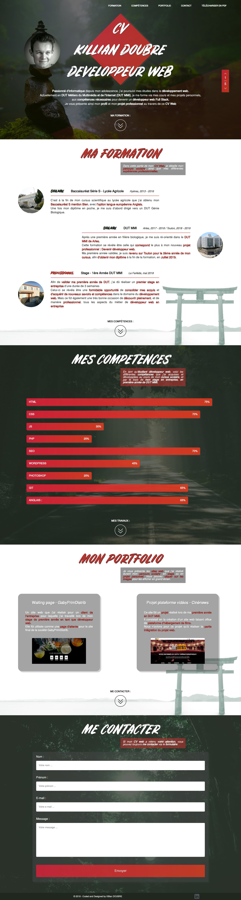
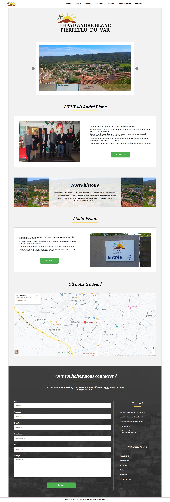
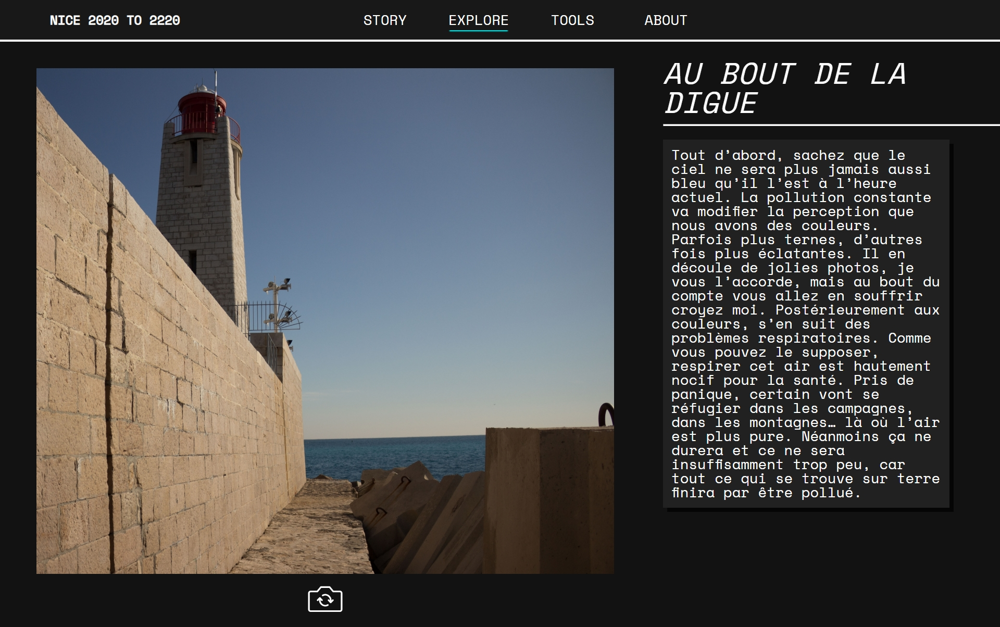

Mon parcours :
Baccalauréat Série S - Hyères - 2013/2016
En premier lieu attiré par le milieu biologique et écologique, c'est donc tout naturellement que mon choix de lycée s'est porté vers un lycée agricole. C'est à la fin de mon cursus en série scientifique que j'ai obtenu mon Baccalauréat S mention Bien, avec l'option langue européenne Anglais.
Une fois mon diplôme en poche, je m'étais alors d'abord dirigé vers un DUT Génie Biologique.
DUT MMI - Arles / Toulon - 2017/2019
Cette formation se révèle être celle qui correspond le plus à mon nouveau projet professionnel : Devenir développeur web. En plus de m'y construire une sensibilité au monde du digital de manière générale, au travers de la création et du montage vidéo, du dessin et du design avec photoshop et Illustrator, j'y créé également mes premiers projets de développement de site web dans un cadre scolaire.
Ma première année validée, je suis revenu sur Toulon pour la 2ème année de mon cursus, afin d'obtenir mon diplôme à la fin de la formation, en Juillet 2019.
Cette formation m'a permis d'effectuer deux stages, dont je détaillerai les activités et les créations dans la partie "Mes expériences".
Mes compétences :
HTML/CSS : Ce sont les langages avec lesquels j'ai le plus de facilité. Je n'ai aucun soucis pour reproduire à l'identique une maquette donnée avec HTML et CSS. De plus, j'essaie toujours de faire en sorte de toujours utiliser des unités ou des règles css viables avec les règles d'accessibilité, et qui m'économisent un maximum de travail sur le responsive design.
JS : C'est avec la plateforme FreeCodeCamp que j'ai acquis le plus de connaissances sur ce langage. J'ai encore à apprendre au niveau des méthodes introduites par ES6, qui pourraient m'économiser du temps d'écriture, mais la manipulation du DOM avec JS ne me pose pas de problème.
PHP : C'est un langage que j'ai assez peu utilisé jusqu'à présent, mais j'ai beaucoup appris sur le PHP à l'IUT MMI, et via mon stage de deuxième année pour lequel j'ai du créer un panel administrateur, et du contenu dynamique lu sur une base de données.
BDD : Je parviens parfaitement à créer un schéma de base de données tiré d'un problème ou d'un projet donné. Je n'ai aucun problème non plus avec le langage SQL, que j'ai souvent utilisé en cours avec postgresql, ou des projets web avec phpMyAdmin.
Frameworks : Les frameworks sont des outils que je n'ai jamais vu en cours mais auquel j'ai commencé à m'intéresser avec la popularité grandissante de ces derniers et de VueJS en particulier. J'ai réussi à réaliser des pages web, à manipuler le dom en utilisant VueJS ou ReactJS, sans pour autant aller plus loin. Je n'ai par contre jamais tenté de créer un site web avec Django, Symfony, ou tout autre framework python et PHP. J'ai aussi utilisé Bootstrap sur plusieurs projets scolaires comme framework CSS.
SEO : J'ai appris les principes fondamentaux du SEO en cours et également via des vidéos et des tutos sur internet. J'essaie dans mes projets de toujours optimiser les performances de mon site en compressant les images et les fichiers, en utilisant les meilleurs formats. Je réfléchis également au contenu de mes balises méta, et j'utilise dès que je le peux des balises HTML sémantiques.
Wordpress : C'est un CMS que j'ai beaucoup utilisé lors de mon stage de première année car la plupart des projets de mon entreprise d'accueil utilisaient Wordpress avec le thème Avada. Après formation je n'ai pas eu de problème pour modifier les pages et mettre à jour le contenu.
Photoshop : Photoshop est un outil que j'ai appris à utiliser en cours pour créer des montages photo et des maquettes web. C'est encore pour moi un domaine en cours d'apprentissage.
Git : J'ai appris à utiliser Git à travers de projets auquel j'ai participé avec des collègues rencontrés sur internet. Ainsi je connais très bien les fonctionnalités de base, comme pull, push, commit, fork, rebase, les pull request ou les branches.
Anglais : Je maîtrise l'anglais à l'écrit, à l'oral, ainsi qu'à la compréhension.
Mes expériences :
Premier projet Cinénews
Ce fût mon premier projet de création de site web de première année de l'IUT MMI. Le but était simplement de créer un site web multipages classique présentant des films comme un cinéma, sans base de données et sans responsive design.
Stage de première année
Lors de mon stage de première année, j'ai beaucoup utilisé HTML/CSS pour corriger des erreurs de positionnement sur des pages web, en utilisant les maquettes qu'on me fournissait. J'ai également participé à la création de pages et de contenu sur des sites utilisant Wordpress. Enfin, j'ai dû créer entièrement une petite page web d'attente pour un client, en attendant la mise en ligne de son site définitif, avec un décompte.
Premier CV Web
Voici le premier CV Web que j'avais créé afin de prospecter pour mon stage de deuxième année. C'est une single page avec des scripts JS, le bouton de droite permettant de naviguer rapidement à travers les 5 blocs du site. Le site utilise du PHP pour la gestion d'envoi de mails via la partie Contact. Le code est consultable sur le lien github en dessous de l'image.
Stage de deuxième année
Pour mon stage de deuxième année, j'ai du concevoir un site web pour un ehpad, en commençant par le design, le développement et l'intégration, puis en terminant par le référencement et l'optimisation des performances de celui-ci. Malheureusement, l'administrateur réseau du site n'a pas renouvelé l'hébergement du site, j'ai donc hebergé le code de celui-ci sur github afin que vous puissiez le consulter.
Projet Nice 2220
J'ai créé ce site pour un projet universitaire d'un ami. Celui-ci avait besoin d'un site statique et multi pages. Apprenant dans le même temps le javascript, j'en ai profité pour créer des scripts à la main sur ce projet, afin de m'exercer. Il n'y a aucun responsive design sur ce projet.
